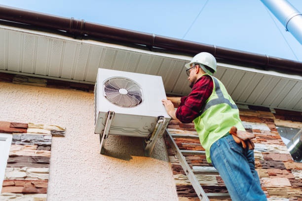

Top AC repair services in Meridian Village Colorado . We offer quick, affordable solutions for cooling problems, ensuring your system runs smoothly even during the hottest days. Satisfaction guaranteed.
Click Here To Call Us (877) 848-1711Are you facing issues with your air conditioning system in Meridian Village Colorado ? At our AC repair company, we understand the importance of a reliable and efficient cooling system, especially during the scorching summer months. Our certified technicians are experts in diagnosing and repairing all types of AC units, ensuring your home remains comfortable and energy-efficient.
We pride ourselves on providing fast, reliable, and affordable AC repair services to the residents of Meridian Village Colorado . Whether your system is blowing warm air, making strange noises, or not turning on at all, our experienced team can quickly identify the problem and offer effective solutions. We use the latest tools and technology to ensure every repair is done right the first time, minimizing downtime and maximizing your comfort.
Our commitment to quality extends beyond just fixing your AC. We also offer comprehensive maintenance services to keep your system running smoothly year-round, preventing costly breakdowns and extending the life of your unit. With transparent pricing, exceptional customer service, and a satisfaction guarantee, we are the trusted choice for AC repair in Meridian Village Colorado .
Don't let a malfunctioning AC disrupt your comfort. Contact us today to schedule an appointment and experience top-notch service that puts your needs first. Your comfort is our priority, and we are here to ensure you stay cool and comfortable all year long in Meridian Village Colorado .
Residential & commercial Ac repair
Quality services at affordable prices
Immediate 24/ 7 emergency services

Is your air conditioner failing to cool your home in Meridian Village Colorado ? It can be frustrating, especially during the sweltering summer months. At Hull AC Repair, we understand how crucial a well-functioning AC is for your comfort. If your AC isn’t cooling properly, there are several potential causes.
A common issue is a dirty air filter. When the filter is clogged, airflow becomes restricted, causing the unit to struggle in cooling your space. Replacing or cleaning the filter can often restore your AC’s efficiency. Another culprit could be low refrigerant levels. Refrigerant is essential for absorbing heat and producing cool air. If there’s a leak or the levels are too low, your AC won't cool effectively.
The problem might also lie with the thermostat settings. Ensure that the thermostat is set to "cool" and the temperature is lower than the current room temperature. Sometimes, a failing compressor or dirty condenser coils could be at fault. The compressor is the heart of the system, and when it malfunctions, cooling is compromised.
Don’t let a malfunctioning AC disrupt your comfort in Meridian Village Colorado . At Hull AC Repair, we offer expert AC repair services across all cities in Meridian Village Colorado . Our trained technicians can quickly diagnose and fix the issue, ensuring your home stays cool and comfortable. Contact us today for reliable, same-day AC repair services!
Residential & commercial Ac repair
Quality services at affordable prices
Immediate 24/ 7 emergency services
Window air conditioners are an effective way to cool specific areas in your home or office at a fraction of the cost of central air conditioning. However, like any appliance, they can encounter issues over time. Our window AC repair services are designed to quickly address any problems you face with your unit, ensuring you can enjoy cool, comfortable air without interruption.
Our experienced technicians are well-versed in diagnosing and repairing all types of window AC units. Whether you are dealing with insufficient cooling, unusual noises, or a malfunctioning thermostat, we can provide efficient and effective repairs tailored to your needs.
Why choose our window AC repair services? Our comprehensive approach ensures that every technician assigned to your repair is skilled and knowledgeable about various window AC models. We arrive prepared to conduct a complete assessment of your unit, identifying both immediate and potential issues.
Furthermore, we pride ourselves on our commitment to transparent pricing. Before any repairs are initiated, our technicians will explain the scope of work and provide a detailed estimate so you can make informed decisions. We believe in fostering trust through clear communication.
Moreover, we focus on delivering prompt repair services to minimize discomfort in your living or working space. Whether it’s a weekend or an evening, our team is ready to assist you when you need it most.
Regular maintenance is also crucial to prolonging the life of your window AC unit. We offer maintenance services to help you keep your unit running efficiently and prevent future problems. By choosing our maintenance plans, you can extend the life of your air conditioner and enhance its performance.
If you are located and need reliable window AC repair services, contact us today. We are committed to restoring your comfort quickly and effectively.

Window units are a common air conditioning solution, and our window AC repair services in Meridian Village Colorado focus on fixing problems with your individual unit effectively. Whether your window AC is leaking or not blowing cool air, our professionals can diagnose and remedy the situation promptly, rejuvenating the functionality of your system.
Installing a new air conditioning system is a significant investment fr your home or business. Choosing the right unit and ensuring it is installed correctly are critical factors that contribute to the efficiency and longevity of your new system. Our air conditioning installation services in Meridian Village Colorado are designed to provide you with expert guidance and quality workmanship, ensuring you receive the best possible results.
Our process begins with an extensive consultation to evaluate your cooling needs. Our experienced technicians will assess your property, discuss your preferences, and provide recommendations for suitable air conditioning systems. We have a range of options, including central air conditioning, ductless systems, and high-efficiency models, to ensure we find the ideal fit for your space.
Why choose our air conditioning installation services? First and foremost, we prioritize quality and expertise. Our technicians are trained and certified to handle all aspects of installation. We are committed to following industry best practices to ensure that your new system is installed correctly and is fully operational.
Additionally, we believe in transparency throughout the installation process. Our team will explain each step, outline timelines, and ensure you are fully informed. We provide detailed pricing upfront so you can be confident in your investment.
Furthermore, our focus on customer satisfaction means we take great care during the installation process, treating your home or business with respect. Our goal is to create a positive experience, minimizing disruption to your daily life while delivering high-quality results.
Once your new system is installed, we offer ongoing support and maintenance options to help you keep it running smoothly for years to come. Regular maintenance is key to ensuring the efficiency and longevity of your system, allowing you to enjoy the benefits of a reliable air conditioning solution without worry.
In Meridian Village Colorado if you're looking for professional air conditioning installation services, trust our experienced team to deliver quality results that keep you comfortable and satisfied. Your comfort is our top priority.

When it comes to air conditioning repairs, having a reliable local technician on your side can make all the difference. Our local AC repair technicians in Meridian Village Colorado bring a wealth of knowledge and expertise to every job, ensuring you receive top-quality service right in your community.
Our technicians are not just skilled; they are also familiar with the specific climate challenges faced . This local expertise allows us to understand the common issues residents encounter and provide tailored solutions that meet the unique needs of our clients.
Why should you choose our local AC repair technicians? We believe in the power of community. Our technicians are committed to building relationships with customers, offering personalized service, and delivering timely repairs. We know that when your AC needs repair, you need a quick response, and our local presence ensures that help is always nearby.
Moreover, our team is trained in the latest HVAC technologies and repair techniques, allowing us to effectively address all sorts of AC issues. From minor repairs to significant malfunctions, our technicians have the skills to ensure your system is functional and efficient.
We also prioritize accessibility and transparency. When you contact our local technicians for an AC repair, you can expect quick turnaround times and upfront pricing. Our technicians will evaluate your system thoroughly, explain their findings, and provide clear estimates for the necessary repair work.
Additionally, fostering local connections means we genuinely care about your satisfaction. Our priority is to ensure your comfort and well-being through every step of the repair process. Our technicians are friendly and polite, taking the time to answer any questions you may have during and after the repair.
Choose our local AC repair technicians in Meridian Village Colorado for prompt, professional, and personalized service. We're dedicated to ensuring you stay cool and comfortable, no matter what issues arise with your air conditioning system.

Having local AC repair technicians at your service ensures prompt and reliable assistance when needed. Our team is dedicated to providing high-quality service with a focus on personalized care. Our experts are familiar with the climate and unique challenges faced by residents in the area.
When you choose Ac repair, you’re choosing a team that values community. We ensure that our local technicians are trained, certified, and equipped to handle a wide range of air conditioning issues, delivering successful resolutions with each call.
Clean air ducts are essential for maintaining good air quality and efficient HVAC operation in your home or business. Over time, dust, debris, and allergens can accumulate in your ductwork, impacting both your health and your system's performance. Our air duct cleaning services are designed to enhance indoor air quality and improve the efficiency of your HVAC system.
Our team of skilled technicians is equipped to conduct thorough inspections and professional cleaning of your air ducts. We utilize advanced equipment and techniques to remove all contaminants, ensuring that your indoor air is clean and healthy.
Why choose our air duct cleaning services? We understand that clean air ducts contribute to optimal HVAC performance and the overall comfort of your living space. By removing built-up dust and allergens, you not only improve your family's health but also reduce wear and tear on your HVAC system, leading to better efficiency and potentially lower energy costs.
Moreover, we prioritize transparency in our services. Our technicians will provide a detailed assessment of your air ducts and recommend the best cleaning options based on our findings. We believe in keeping our clients informed throughout the process to ensure confidence in the work being done.
Additionally, our commitment to quality means we use high-grade cleaning equipment and materials to deliver effective results. We take great care during the cleaning process to protect your home, ensuring that everything is properly sealed and that no mess is left behind.
Regular air duct cleaning is an essential aspect of home maintenance. We recommend having your ducts cleaned every few years to keep your system running at its best. Our team can help you establish a maintenance plan tailored to your needs, ensuring you enjoy clean air and optimal HVAC performance.
, choose our professional air duct cleaning services for enhanced air quality, system efficiency, and overall comfort in your home or business. We're dedicated to delivering quality results that positively impact your environment.

Clean air ducts contribute significantly to indoor air quality and system efficiency. Our air duct cleaning services ensure that your home or business benefits from a clean and healthy airflow. Dust, allergens, and debris can accumulate in your ducts, diminishing your system's efficiency and compromising air quality. Our trained technicians use specialized equipment to thoroughly clean your ducts, improving your HVAC system's performance and extending its lifespan. Trust us to enhance your indoor environment with professional air duct cleaning services that prioritize your health and comfort.

Among the myriad of AC repair companies, Ac repair stands out as the best . We are committed to delivering professional, reliable, and affordable services to our clients. Our years of experience and an unwavering focus on customer satisfaction have established us as a trusted name in the industry.
Whether it’s routine maintenance, emergency repairs, or full system replacements, our team of skilled technicians is here to provide quality service that exceeds expectations. With honest pricing and a strong reputation, it’s no wonder we’re the preferred choice for AC repair in Meridian Village Colorado .
Years Experience
Expert Technicians
Satisfied Clients
Compleate Projects
At Hull AC Repair, we understand the importance of a well-functioning air conditioning system, especially in Meridian Village Colorado where temperatures can fluctuate dramatically. Our dedicated team of certified HVAC technicians is committed to providing top-notch AC repair services that ensure your home stays comfortable year-round.
What sets us apart is our relentless focus on customer satisfaction. We combine years of industry experience with cutting-edge technology to diagnose and repair your AC system swiftly and effectively. Our transparent pricing model means no hidden fees—just honest, upfront estimates and high-quality service.
We pride ourselves on our quick response times. Whether it's a sudden breakdown or a routine maintenance check, Hull AC Repair offers prompt and reliable solutions tailored to your specific needs. Our technicians are trained to handle all makes and models, ensuring that no matter what brand or type of AC unit you have, we have the expertise to fix it.
Moreover, our commitment to using only high-grade parts and equipment guarantees long-lasting results. We are also proud to offer flexible scheduling to fit your busy life, ensuring that your AC repair is handled at your convenience.
Choose Hull AC Repair in Meridian Village Colorado for unparalleled service and peace of mind. With our exceptional skills, dedication to quality, and customer-first approach, we’re your go-to experts for all your AC repair needs. Contact us today to experience the difference.
When your air conditioning system malfunctions, the first thing you might search for is AC repair near me. That’s where we come into play! Our team of certified technicians is always ready to provide prompt, professional, and high-quality AC repair services in Meridian Village Colorado . We understand that a functioning air conditioner is crucial for your comfort, especially during sweltering summer days. Our local presence means we can arrive quickly, ensuring that your home remains a cool sanctuary. Plus, our transparent pricing and dedication to customer satisfaction set us apart as the trusted choice .
The importance of a functioning air conditioner cannot be overstated, especially during those hot summer months . Our air conditioner repair services cover a wide spectrum of issues, from minor tune-ups to major repairs. We utilize the latest technologies and industry best practices to ensure that we get your system back up and running as quickly and efficiently as possible. Our trained technicians will work to understand the issue fully, providing you with transparent estimates and options. With our exceptional customer service, we focus on building long-term relationships with our clients, ensuring that you have a dependable partner for all your air conditioning needs.
An air conditioner breakdown can happen at the most inconvenient times, leaving you in discomfort and frustration. That’s why we offer emergency AC repair services to ensure that you aren’t left without a working air conditioning system. Our emergency response team is available 24/7, providing prompt service and effective solutions regardless of the hour. We understand the urgency involved in emergency situations; thus, we act swiftly, diagnosing your problem and resolving it with efficiency. When you choose us, you get reliability, experience, and a commitment to customer satisfaction, making us the best choice for emergency air conditioning repairs.
Your HVAC system plays a crucial role in maintaining comfort in your home or office throughout the year. From heating in the winter to cooling in the summer, a well-functioning HVAC system is essential. If you’re facing issues with your HVAC unit, you need reliable HVAC repair services that you can trust, and that’s where we come in.
Our company specializes in comprehensive HVAC repair services tailored to your unique needs . We have a team of dedicated and highly trained technicians who are experts in diagnosing and repairing all types of HVAC systems. Whether it's a small residential unit or a complex commercial system, we have the skills and expertise to handle it all.
What sets our HVAC repair services apart? First and foremost, we prioritize high-quality workmanship and excellence in customer service. Our technicians are not only skilled but also committed to keeping you informed throughout the repair process. We provide detailed explanations of any problems we find and present you with valuable options for repairs or replacements.
Equally important is our commitment to using only the best quality parts and equipment. We understand that the reliability of your HVAC system depends on the components that are used during repairs. For this reason, we source our materials from reputable manufacturers, ensuring you receive the best in quality and durability.
In addition, we offer preventive maintenance services to help you avoid future HVAC issues. Regular maintenance can prolong the life of your system and enhance its efficiency, ultimately saving you money on energy costs. Our technicians can identify potential problems before they escalate, providing you with peace of mind and comfort in your home or business.
Choose us for your HVAC repair needs and experience the highest standard of professionalism, quality, and customer care. Our goal is not just to fix your HVAC system but to build lasting relationships with our clients based on trust and reliability.
Maintaining your HVAC system is vital for your home’s comfort, especially in varying climates. Our comprehensive HVAC repair services address all heating and cooling issues, ensuring your HVAC system operates at optimal performance. Our experienced technicians can troubleshoot complex problems and develop tailored solutions that meet your specific needs. We use advanced diagnostic tools and techniques to ensure accuracy and reliability in our repairs. We understand that HVAC issues can be costly, so we strive to offer affordable solutions without compromising quality. Choose us as your HVAC repair partner and experience the peace of mind that comes from working with trusted professionals.
We believe that quality AC repair should be accessible to everyone. Our affordable AC repair services in Meridian Village Colorado not only provide budget-conscious solutions but also prioritize quality workmanship. We aim to offer competitive pricing without compromising service quality. With us, you can expect transparent pricing, with no hidden fees or surprise charges after the repair is complete. Our goal is to make your air conditioning problems hassle-free and as cost-effective as possible.
Your home should be a comfortable haven, free from the disturbances of an inefficient air conditioning system. Our residential AC repair services in Meridian Village Colorado are tailored to assess and resolve any cooling issues efficiently. We offer thorough inspections and strive to educate our clients on maintaining their systems. Our commitment to customer service and satisfaction makes us a premier choice for homeowners across Meridian Village Colorado .
In the heart of any thriving business lies a commitment to maintaining a comfortable environment for both employees and customers. Our commercial AC repair services are tailored to meet the unique demands of businesses, ensuring your air conditioning system runs efficiently year-round. We understand that system downtime can lead to significant losses, which is why we offer rapid service without compromising on quality. Our experienced technicians can address any issues your system may have, providing minimal disruption to your business operations. Choose us as your commercial AC repair partner and experience unparalleled professionalism and reliability.
Air conditioning problems can occur unexpectedly, often requiring immediate attention. That’s why we offer 24-hour AC repair services in Meridian Village Colorado . Our dedicated team is available around the clock, ready to respond to your urgent AC repair needs, no matter the time of day or night. We believe that everyone deserves comfort in their home or business, which is why our technicians are always prepared for emergency calls. Trust us to deliver swift and effective repairs any time you need us, ensuring that your air conditioning system is back up and running without delay.
Regular maintenance is essential to keep your air conditioning system running efficiently and reliably. Our AC tune-up services are designed to enhance your system’s performance, improve energy efficiency, and extend its lifespan. Investing in routine maintenance can help prevent unexpected breakdowns and the need for costly repairs down the road.
Scheduling an AC tune-up with our experienced technicians ensures that your system receives a thorough inspection and necessary adjustments. Our process includes checking all key components, such as the compressor, evaporator coils, and refrigerant levels, to ensure everything is operating correctly.
What are the benefits of choosing our AC tune-up services? Apart from identifying and addressing potential issues early on, regular maintenance can lead to significant savings on energy bills. An efficiently running air conditioning system consumes less energy, allowing you to enjoy the comfort of a cool environment without increased costs.
Moreover, our technicians will clean and lubricate essential components during the tune-up, ensuring your system functions smoothly. We also check for any signs of wear and tear, allowing us to catch problems before they escalate into major issues that require emergency repairs.
Our commitment to customer satisfaction means that we prioritize quality service. Each technician is extensively trained and equipped with state-of-the-art tools to perform tune-ups effectively. After completing the service, we provide you with a detailed report on your system’s health, along with recommendations for any needed repairs or improvements.
We also offer flexible scheduling options, making it easy to set up your AC tune-up service at a time that works for you. By choosing us, you can create a routine maintenance plan that fits your schedule and helps ensure consistent comfort in your home.
In summary, for your AC tune-up needs in Meridian Village Colorado trust our company to provide thorough, reliable, and economical services. By partnering with us, you are investing in the longevity of your air conditioning system and the comfort of your home.
Regular maintenance is key to longevity and efficiency for your air conditioning system. Our AC tune-up services involve comprehensive inspections that identify potential issues before they become costly repairs.
Our expert technicians utilize a meticulous checklist during tune-ups, ensuring that your system is operating at peak performance. Opting for our tune-up services not only prolongs the life of your unit but also enhances energy efficiency, saving you money on your energy bills. With Ac repair, enjoy peace of mind knowing your air conditioning is in expert hands.
Ductless air conditioning systems have gained popularity due to their energy efficiency and flexibility in cooling individual spaces. However, like any HVAC system, ductless units can experience issues that require professional attention. Our ductless AC repair services in Meridian Village Colorado are here to restore your unit’s performance and ensure your environment remains comfortable.
Specializing in ductless air conditioning systems, our trained technicians are equipped to handle various issues, from mechanical failures to refrigerant leaks. We understand the intricacies of ductless systems, having worked extensively with various brands and models. When you call us for ductless AC repair, you can be confident that you will receive effective solutions tailored to your specific needs.
What makes our ductless AC repair services stand out? Our commitment to excellence ensures that each technician is not only skilled but also has extensive training in diagnosing and fixing ductless systems. We utilize advanced diagnostic tools to identify the problem quickly and accurately, minimizing disruption to your comfort.
Additionally, we pride ourselves on offering transparent pricing and clear communication. Our technicians will provide you with a detailed explanation of the issues found, the proposed repairs, and the associated costs before any work begins. You’ll have all the information you need to make informed decisions about your repairs.
Moreover, our focus on customer satisfaction means we strive to complete repairs promptly without sacrificing quality. We understand that when your ductless AC is not functioning, it can lead to discomfort, so we prioritize fast turnaround times while ensuring every repair is done correctly.
Preventive maintenance is another key aspect of our service. We offer tailored maintenance plans for ductless systems to help you avoid costly repairs and keep your system operating efficiently. Regular maintenance can enhance performance, reduce energy costs, and prolong the life of your ductless system.
, our ductless AC repair services are here to keep your home or business comfortable. Choose us for our quality workmanship, customer-focused approach, and dedication to getting your system back to optimal performance.
An air conditioning unit is a crucial element in maintaining comfort in your home or business, especially during sweltering summer days. A malfunction can disrupt your comfort zone, resulting in frustration and stress. Our AC unit repair services are designed to efficiently diagnose and resolve any issues your unit may be facing, ensuring you can enjoy a cool, comfortable environment again.
Our team of trained technicians specializes in repairing all types of AC units, from traditional central air systems to modern ductless setups. With years of experience under our belts, we can quickly identify common problems such as poor airflow, unusual noises, or perceived inefficiencies, helping to get your unit back into action swiftly.
Why choose our AC unit repair services? First, our commitment to quality means we believe in providing thorough and accurate assessments. Our technicians will arrive at your property equipped with the necessary tools and equipment to diagnose and fix your unit effectively. We understand that a malfunctioning AC unit can escalate into more significant issues if not addressed promptly, so we prioritize timely, efficient repairs.
Moreover, we focus on transparency in our pricing and practice. Before commencing any repair work, our technicians will provide a detailed breakdown of the required repairs alongside their associated costs. This manner of communication ensures that you have a clear understanding of your expenses and can make informed decisions regarding your unit’s repairs.
Our dedication to customer service ensures that you will receive friendly, professional assistance throughout the repair process. We strive to create long-lasting relationships with our customers, built on trust and reliability. We understand that you want your AC unit repaired correctly the first time, so we operate with high standards of workmanship.
Additionally, we offer maintenance services to help you avoid costly repairs in the future. Regular check-ups can identify potential issues before they escalate, ultimately prolonging the lifespan of your unit and maintaining optimal efficiency.
, when you need reliable, professional AC unit repair, trust our team to deliver exceptional service and quality repairs that get you back to comfort as soon as possible.
If your AC unit is on the fritz, it’s time to call in the experts! Our AC unit repair services in Meridian Village Colorado focus on efficiently diagnosing and resolving issues, restoring your indoor comfort as soon as possible. From evaporator coils to compressor failures, our technicians are equipped to handle it all.
We believe in a customer-first philosophy, ensuring our clients are informed and satisfied every step of the way. With years of experience, our team guarantees exceptional quality and reliability in every repair service.
Sometimes repairs just aren’t enough, and it’s time to consider a replacement. Our air conditioning replacement services are designed to help you navigate the options available, ensuring you make informed decisions about your next system. We offer a range of efficient models that can improve your comfort and lower utility bills.
At Ac repair, we handle the entire process, from selecting the right system for your needs to professional installation. Understanding the long-term investment involved, we ensure that our offerings are not only effective but also budget-friendly.
Is your air conditioning system not performing as it should? Our air conditioning troubleshooting services are dedicated to pinpointing and addressing issues effectively. Our skilled technicians utilize advanced diagnostic tools to identify problems quickly, providing you with detailed reports and options for repair or replacement.
Consistency and quality are our priorities at Ac repair. We ensure every client receives personalized advice and recommendations that are practical and beneficial to their specific situation.
Heat pumps are versatile systems that provide both heating and cooling. Our heat pump repair services cover all aspects of these specialized systems. When your heat pump experiences issues, our skilled technicians are ready to assess the problem and implement effective repairs to restore your system's functionality. We understand the intricacies of heat pumps, and our approach focuses on identifying underlying issues to ensure longevity and efficiency. Choose us for reliable heat pump repairs and experience comfort throughout every season.
Regular maintenance is crucial for keeping your air conditioner running efficiently throughout the year. In Meridian Village Colorado where the climate can be extreme, scheduling timely AC service is essential to ensure your system performs at its best when you need it most.
Experts recommend servicing your air conditioner at least once a year, preferably before the peak of the cooling season. During a routine service, professionals from Hull AC Repair will inspect and clean key components, including the evaporator and condenser coils, air filters, and refrigerant levels. This preventative maintenance helps identify potential issues before they turn into costly repairs, ensuring your AC operates smoothly and efficiently.
Neglecting regular service can lead to reduced efficiency, higher energy bills, and a shorter lifespan for your unit. A well-maintained air conditioner not only keeps your home comfortable but also saves you money on energy costs and extends the life of your system. Hull AC Repair provides comprehensive AC servicing across all cities in Meridian Village Colorado offering expert care to keep your system in top shape.
Don’t wait until a minor issue becomes a major problem. Schedule your annual AC service with Hull AC Repair today and enjoy peace of mind knowing your air conditioner is in the best possible condition. Our skilled technicians are dedicated to providing reliable and prompt service, ensuring your home stays cool and comfortable year-round.
Meridian Village is an unincorporated community and a census-designated place (CDP) located in and governed by Douglas County, Colorado, United States. The population was 3,202 at the 2020 census. The CDP is a part of the Denver–Aurora–Lakewood, CO Metropolitan Statistical Area. The Meridian Metropolitan District provides services to the area, which lies in ZIP code 80134.
Regular maintenance, filter changes, and upgrading to a programmable thermostat are some ways Hull AC Repair can help improve your AC’s energy efficiency.
Yes, Hull AC Repair has the expertise to repair older AC units but we also provide advice on when replacement might be more cost-effective.
Yes, Hull AC Repair offers solutions like air purifiers and filtration systems to improve indoor air quality .
Yes, Hull AC Repair provides both AC repair and replacement services in Meridian Village Colorado helping you upgrade to more energy-efficient systems if needed.
AC systems generally last between 10 to 15 years with proper maintenance. Hull AC Repair can help maximize your unit’s lifespan.
If your AC is blowing warm air, contact Hull AC Repair in Meridian Village Colorado . It could be a refrigerant issue, thermostat problem, or dirty filters.
A higher energy bill may indicate your AC is struggling due to maintenance issues. Hull AC Repair in Meridian Village Colorado can assess and fix the problem.
Yes, Hull AC Repair offers free quotes for AC repairs in Meridian Village Colorado . Contact us to schedule your estimate.
Yes, Hull AC Repair offers comprehensive maintenance plans to help keep your AC system running efficiently year-round.
Hull AC Repair services all major AC brands including Carrier, Trane, Lennox, Goodman, and more.
Yes, Hull AC Repair provides emergency AC repair services to restore comfort quickly when your AC fails unexpectedly.
Most AC repairs by Hull AC Repair in Meridian Village Colorado can be completed within 1 to 3 hours, depending on the complexity of the issue.
In many cases, repairing your AC is more affordable, but Hull AC Repair will recommend replacement if repairs become frequent or costly.
Yes, Hull AC Repair provides 24/7 emergency AC repair services ensuring your system is up and running when you need it most.
Hull AC Repair recommends servicing your AC unit at least once a year to maintain optimal performance and avoid breakdowns.
If your AC is freezing, turn it off and contact Hull AC Repair . This could be due to airflow issues, refrigerant levels, or dirty coils.
The cost of AC repair in Meridian Village Colorado depends on the issue, the system type, and labor involved. Hull AC Repair offers free estimates to provide an accurate quote.
Hull AC Repair recommends setting your thermostat to around 78°F when you’re home for optimal energy savings and comfort in Meridian Village Colorado .
While Hull AC Repair focuses on AC repair, we also offer duct cleaning services to improve your indoor air quality and system efficiency.
Common signs include weak airflow, warm air, strange noises, bad odors, or frequent cycling. Contact Hull AC Repair to diagnose and fix the issue.
Strange noises could indicate a mechanical issue, such as a loose part or motor failure. Contact Hull AC Repair for an immediate inspection.
Signs of low refrigerant include warm air and ice on your AC unit. Hull AC Repair can check and refill refrigerant if necessary.
Yes, Hull AC Repair offers flexible financing options for larger AC repair and replacement services .
Regular maintenance, filter replacements, and seasonal tune-ups from Hull AC Repair in Meridian Village Colorado can prevent breakdowns and extend the life of your system.
Hull AC Repair proudly serves all neighborhoods and surrounding areas for AC repair services.
Short cycling can signal various issues, such as a thermostat problem or a clogged filter. Contact Hull AC Repair in Meridian Village Colorado for an inspection.
Yes, Hull AC Repair guarantees all AC repair services ensuring your system is fixed right the first time.
Yes, Hull AC Repair specializes in repairing ductless mini-split systems providing efficient service for these unique units.
Hull AC Repair services all types of air conditioning systems in Meridian Village Colorado including central AC units, ductless mini-splits, and window units.
Hull AC Repair offers same-day and next-day service for AC repairs depending on availability.
I’m very impressed with Hull AC Repair in Meridian Village Colorado . Their technician was knowledgeable, courteous, and fixed our AC problem without delay. Great service!
Profession
Hull AC Repair provided excellent AC repair service in Meridian Village Colorado . Their technician was on time, explained the issue clearly, and completed the repair efficiently. Very pleased!
Profession
Hull AC Repair did an amazing job in Meridian Village Colorado . Their technician was on time, professional, and fixed our AC quickly. Great service overall!
Profession